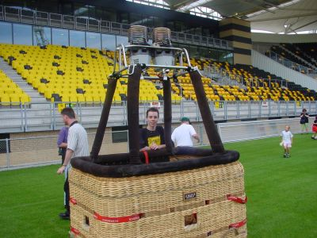
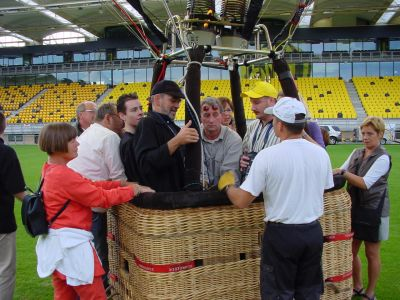
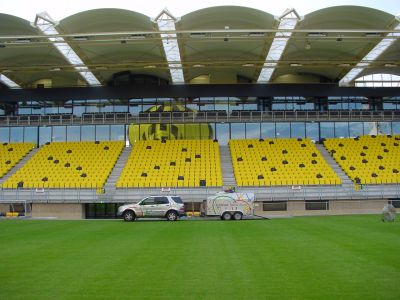
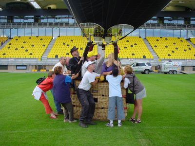
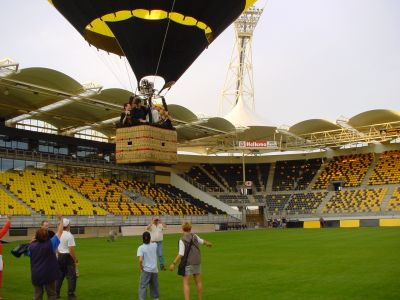
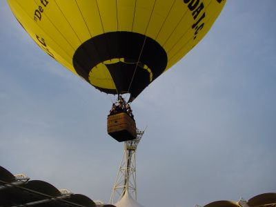
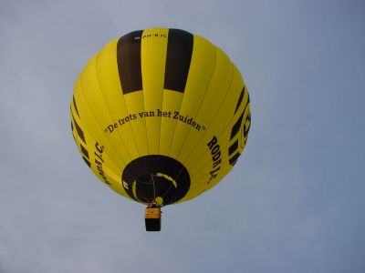
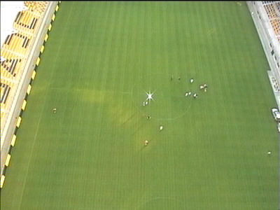
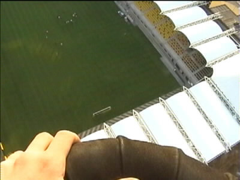
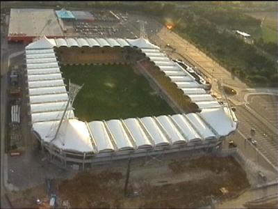

|
Roda-ballon (2) 16 augustus 2001 |

De winnaar van de voorspellingscompetitie voor het mandje.

Er was ook een VIP aan boord: architect Dautzenberg, de
ontwerper van het Parkstad Limburg Stadion.

De opgeblazen ballon weerspiegelt in de skyboxen.

Doordat het binnen het stadion nauwelijks waait is opstijgen
hier de beste optie.

Lift off!

De ballon stijgt met een snelheid van 10 meter per seconde.

De wind waait oostwaarts.

F L A S H

Dit noemen ze nu een skybox.

Het PLS 1 jaar en 1 dag na de opening.